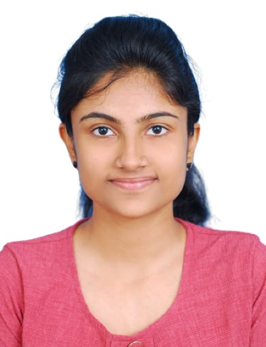

•Python
•C
•C++
•Java
•HTML
•PHP
•MySQL
•Analytical Skills
•Dedication
•Problem Solving
•Adaptability
•Team Player
•RSET Honours Award(A/A+/O in all theory subjects of a semester) in S6(2018-2019)
•RSET Honours Award(A/A+/O in all theory subjects of a semester) in S1(2016-2017)
•Malayalam
•English
•Hindi
•Tamil
•Reading
•Video Editing
•Farming
•Watching Movies
•Video Gaming
•Artificial Intelligence
•Machine Learning
•Stock Market
•Web Designing
•Introduction to TensorFlow for Artificial Intelligence, Machine Learning, and Deep Learning
•AI for Everyone
•Python for Data Science
•Social Networks
•Google Cloud Platform fundamentals
•Indiska Hackathon(11/09/2020-12/09/2020)
•PygHack2020(24/09/2020-26/09/2020)
This website is created using HTML and CSS
Automatically generate 'Wh' questions from a given paragraph or sentence. It utilizes a Machine Learning model along with Natural Language Processing tools to generate questions.
Generates analysis based on the marks or results of students in a class or school. Implemented using PHP and HTML.
A python project to generate various mathematical series and to check whether a given number belongs to a particular mathematical series. Useful for generating test cases in programming courses.
Content Planning, Dataset Development
Intern
Curriculam based Industrial Visit
Conducted by GEC Thrissur in association with KTU Techfest 2019
Conducted by Rajagiri School of Engineering and Technology, Ernakulam
Conducted by Rajagiri School of Engineering and Technology, Ernakulam
Conducted by EBEELABZ
Conducted by CET Trivandrum during DRISHTI'18
Conducted by Rajagiri School of Engineering and Technology, Ernakulam
Participant, Conducted by CCASH as part of Women's day celebration at Rajagiri School of Engineering and Technology, Ernakulam
Participant, Coding Competition Conducted by GEC Thrissur as part of KTU Techfest 2019
Participant, Conducted by GEC Thrissur as part of KTU Techfest 2019
Participant, Conducted by GEC Thrissur as part of Dyuthi'17
Participant, Conducted by GEC Thrissur as part of Dyuthi'17
Participant, Conducted by GEC Thrissur as part of Dyuthi'17
Participant, Conducted by Rajagiri School of Engineering and Technology, Ernakulam as part of Abhiyanthriki 2017
Participant, Conducted by IEEE NIT Calicut